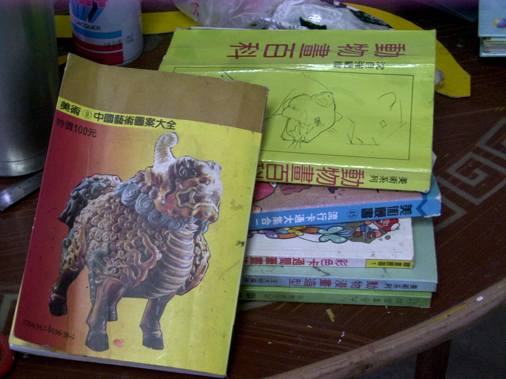
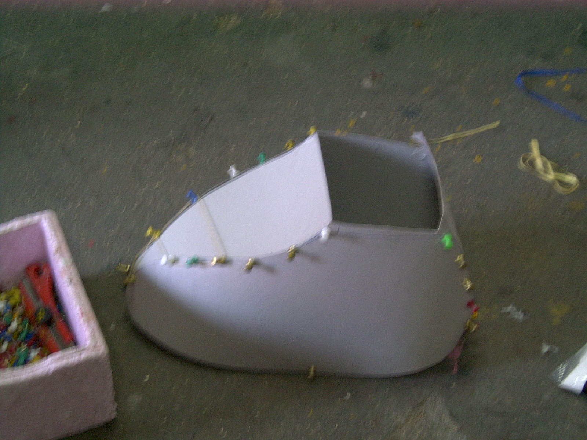
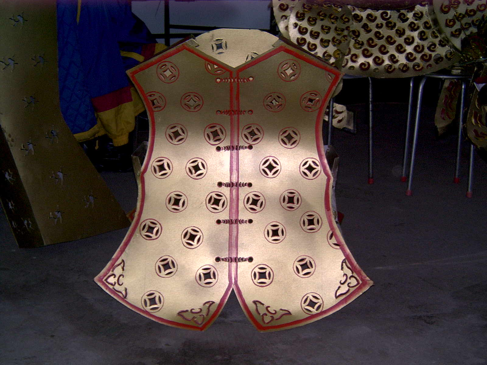
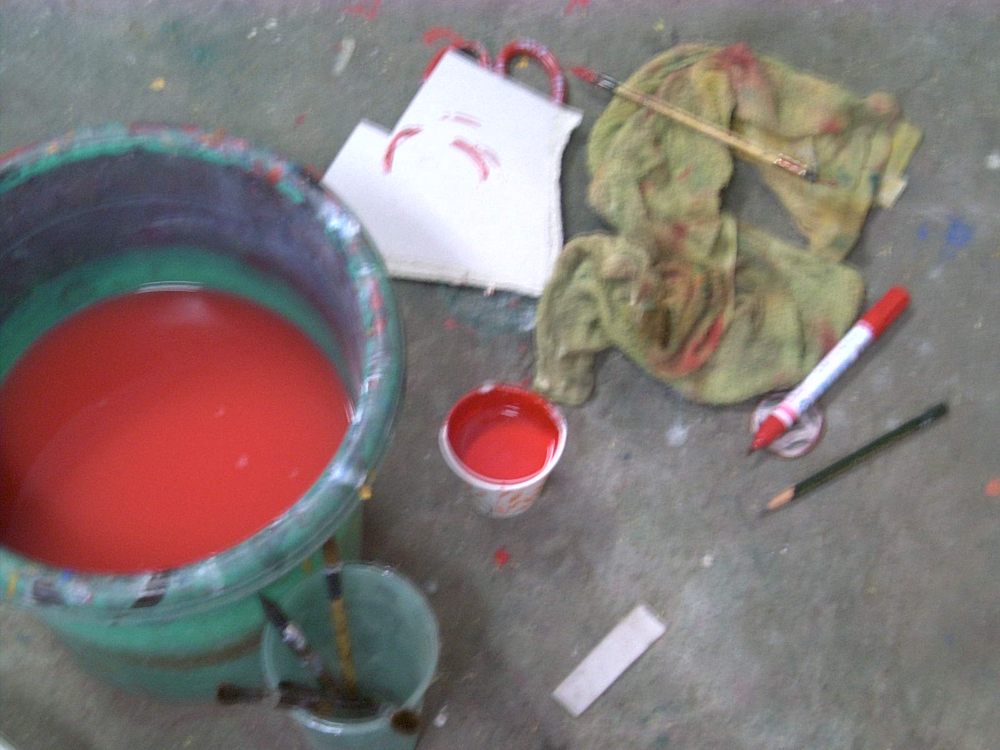
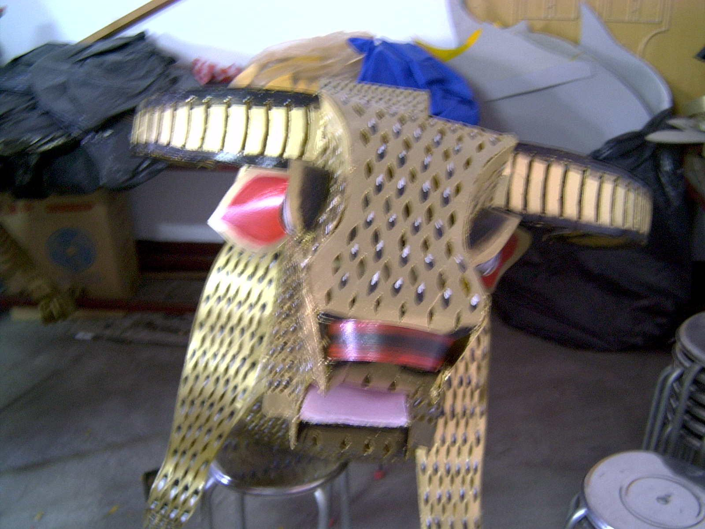
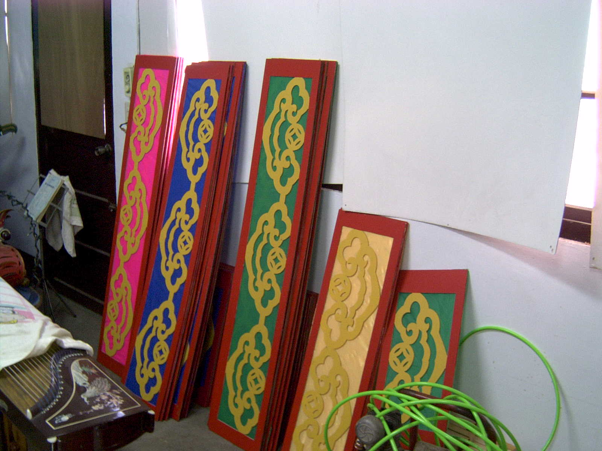
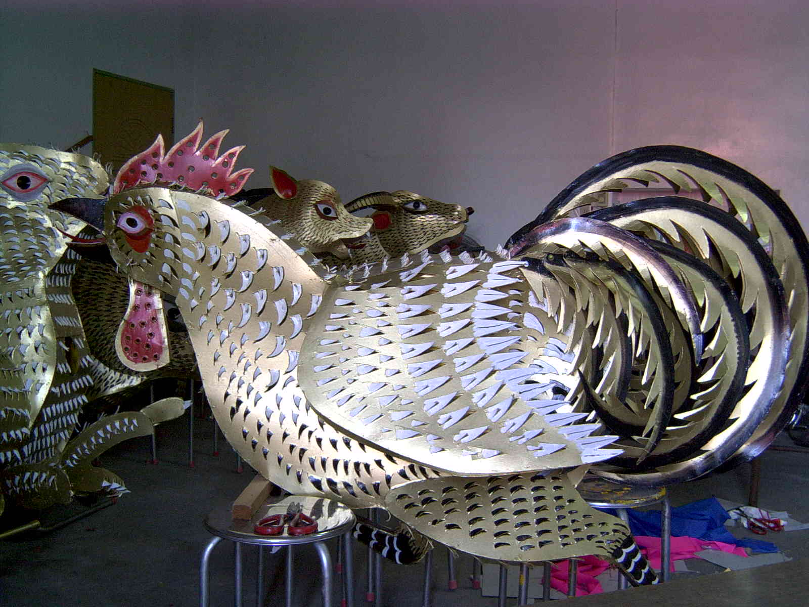
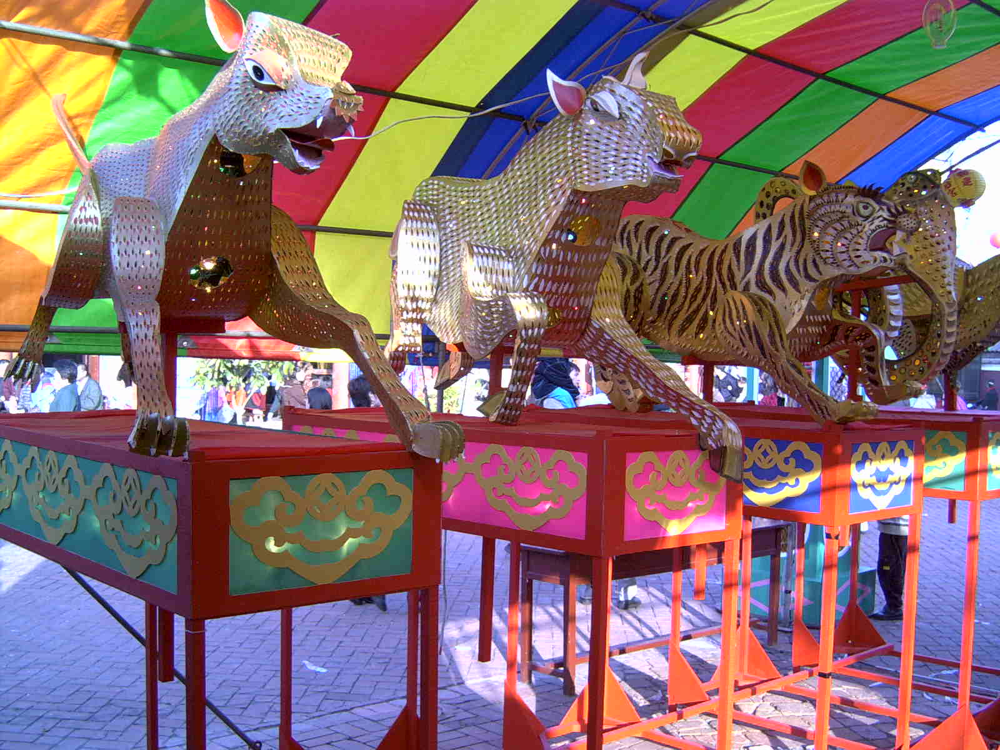

|
|
材料 剪刀 尺 筆 厚紙板 圖釘 白膠 美工刀 顏料 水泥漆<水性> 水性筆
製作過程
1. 主題: 依不同年節 廟宇下去規劃。
2. 找資料:依不同主題 尋找傳說故事 史書 。
3. 參考圖畫書本【先構圖】:依找尋到的資料再參考動物圖 畫書籍構圖。
 4. 設計製作：(一)利用厚紙板製作不同部位，接縫處使 用白膠粘著，圖釘暫時固定並使用美工 刀在紙板上類似紙雕。
  (二)白膠乾燥後，拔除圖釘。 (三)噴上金漆<底漆>，再使用毛筆沾水泥漆 〈水性〉和水性筆畫上顏色。
  (四)各部位使用白膠黏著在一起。 5.架子貼上裝飾板：
  6.將花燈作品架上裝上燈泡完成。

|